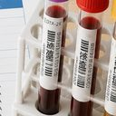

お知らせ
呼吸器内科
咳・痰・息切れ・いびきなど、呼吸に関する症状
呼吸器内科の記事一覧を見る（12件）→
高齢の親が食事中によくむせます。肺炎が心配ですが、何かできることはありますか？
高齢者の誤嚥性肺炎で気づきたいサインと、家庭でできる予防のポイントをまとめました。
息切れ階段や坂道で息切れするようになりました。年齢のせいでしょうか？
動いたときの息切れの一般的な原因と、受診の目安・何科を受診すればよいかをご案内します。
胸のレントゲン健診の胸のレントゲンで「影がある」と言われました。がんでしょうか？
胸部レントゲンの異常陰影は、過去の炎症の跡など経過観察でよいものも多いとされます。まずは呼吸器内科で確かめておくことが大切です。
咳咳が長引くのですが、何科を受診すればいいですか？（3週間以上続く咳について）
長引く咳の主な原因と、呼吸器内科を受診する目安についてご案内します。
喫煙・COPD長年たばこを吸っています。肺の検査は受けたほうがいいですか？
喫煙歴のある方に多いとされるCOPDの症状と、呼吸機能検査でわかることをご案内します。
声のかすれ声のかすれが治りません。どのくらい続いたら受診すべきですか？
2〜3週間以上続く声がれは、原因を確かめておくべきです。特に喫煙されている方は早めに。
コロナ後遺症新型コロナにかかった後、咳やだるさが続いています。いつまで様子を見ればいいですか？
新型コロナの罹患後症状（いわゆる後遺症）でよくみられる症状と、受診を考える目安についてご案内します。
鼻づまり・後鼻漏鼻水がのどに流れて咳が出ます。副鼻腔炎でしょうか？
のどに流れる鼻水（後鼻漏）と長引く咳の関係、考えられる原因と受診の目安をご案内します。
いびき家族から「いびきがうるさい」「寝ている時に呼吸が止まっている」と言われました。検査を受けたほうがいいですか？
いびきや睡眠中の呼吸停止を指摘されたら、睡眠時無呼吸症候群の可能性があります。検査の流れと受診の目安を解説します。
禁煙外来たばこをやめたいのですが、病院で相談できますか？
当院は禁煙治療に対応しています。条件を満たせば保険で受けられ、標準的には12週間で5回の通院です。
痰痰がずっとからむのですが、心配な痰の見分け方はありますか？
痰の色が示すこと、痰が長引く背景にある原因、受診の目安を倉敷市玉島のいなだ医院がご説明します。
ゼーゼー・喘息息をするとゼーゼー・ヒューヒューと音がします。喘息でしょうか？
大人のゼーゼー・ヒューヒュー（喘鳴）の一般的な原因と、受診・救急受診の目安をわかりやすく解説します。
循環器内科
動悸・胸の痛み・むくみ・血圧など、心臓と血管に関する症状
循環器内科の記事一覧を見る（10件）→
少し歩くとふくらはぎが痛くなり、休むと治まります。年のせいでしょうか？
歩くと足が痛くなり休むと治まる症状の考え方と、受診の目安をまとめました。
心房細動健診で心房細動と言われました。症状はあまりないのですが、治療は必要ですか？
心房細動は症状が乏しくても脳梗塞の予防が治療の大きな目的とされています。脈のとり方と受診の目安を解説します。
動脈硬化動脈硬化を防ぐには何をすればいいですか？健診で指摘されたことはないのですが心配です
動脈硬化の危険因子をチェックリストで確認し、生活習慣の工夫と検査・受診の目安をまとめました。
胸の痛み胸が痛いのですが、心臓の病気でしょうか？
胸痛の一般的な原因と、救急要請を含めた受診の目安についてご案内します。
健診・心電図健康診断で心電図に異常があると言われました。精密検査は必要ですか？
健診の心電図で異常を指摘されたときの考え方と受診の目安を、倉敷市玉島のいなだ医院が解説します。
立ちくらみ・失神立ち上がるとふらつきます。意識が遠くなったこともあるのですが、受診したほうがいいですか？
立ちくらみや失神の一般的な原因と、早めの受診が必要とされるサインをわかりやすく解説します。
心不全息切れとむくみがあり、横になると苦しくなります。心臓が悪いのでしょうか？
息切れ・むくみ・横になると苦しいときに考えられることと、受診の目安をまとめました。
血圧健診で血圧が高いと言われました。すぐに薬を飲まないといけませんか？
血圧が高いと指摘されたときの考え方、家庭血圧の測り方、受診の目安をご案内します。
むくみ夕方になると足がむくみます。放っておいて大丈夫でしょうか？
足のむくみの一般的な原因と、受診を検討したほうがよいサインをわかりやすくまとめました。
動悸動悸がしたり、脈が乱れる感じがするのですが、様子を見ていいですか？
動悸・不整脈感の一般的な原因と、受診の目安についてご案内します。
消化器内科（胃腸科）
胃の痛み・胸やけ・お通じ・血便など、胃腸の症状と内視鏡検査
消化器内科（胃腸科）の記事一覧を見る（13件）→
お腹が張って苦しいのですが、ガスがたまっているだけでしょうか？
多くは便秘やガスによるものですが、体重減少・血便・急に張ってきた場合は検査をおすすめします。
血便便に血が混じっていました。痔だと思うのですが、受診は必要ですか？
血便や便潜血陽性は痔でも起こりますが、大腸の病気が隠れていることもあります。受診の目安と検査について解説します。
大腸カメラ大腸カメラはどのような検査ですか？受けたほうがいいのはどんな人ですか？
大腸カメラの検査内容と前日・当日の流れ、受けたほうがよいとされる方の目安をわかりやすく解説します。
便秘便秘が続いて市販の下剤が手放せません。相談したほうがいいでしょうか？
便秘が続いて市販の下剤に頼っている状態は、消化器内科でご相談いただける内容です。便が細くなる・血便・体重減少などがある場合は大腸の検査も検討されます。
右上腹部の痛み脂っこい食事のあとに右の上腹部から背中にかけて痛みます。胆石でしょうか？
食後に右上腹部から背中にかけて痛むときは胆石が背景にある場合があります。受診の目安と検査について解説します。
胃がん検診胃がん検診はバリウムと胃カメラのどちらを受ければいいですか？
胃がん検診のバリウムと胃カメラの違い、国が推奨する対象年齢と受診間隔をわかりやすく解説します。
胃カメラ胃カメラ検査はつらいイメージがあるのですが、大丈夫でしょうか？
経鼻内視鏡（鼻から挿入するタイプ）についてと、検査を受けやすくする工夫をご紹介します。
ピロリ菌ピロリ菌の検査は受けたほうがいいですか？家族が胃がんになったので心配です
ピロリ菌の検査方法、胃カメラとの関係、除菌治療の流れをわかりやすく解説します。
胸やけ胸やけがして、酸っぱいものが上がってくる感じがします。逆流性食道炎でしょうか？
胸やけ・呑酸の原因、市販薬との付き合い方、受診の目安と内視鏡検査について、倉敷市玉島のいなだ医院がわかりやすく解説します。
便秘・下痢便秘と下痢をくり返します。ストレスのせいだと思って我慢していますが、受診したほうがいいですか？
便秘と下痢をくり返す・お腹が張る症状は過敏性腸症候群が背景にあることがあり、治療の対象になります。血便や体重減少などがある場合は大腸の検査も検討されます。
肝機能の異常健診で肝機能の数値が高いと言われました。お酒はあまり飲まないのですが、なぜでしょうか？
お酒を飲まない方でも肝機能の数値は上がることがあります。原因の考え方と受診の目安を解説します。
背中も痛む腹痛みぞおちから背中にかけて痛みます。胃ではないのでしょうか？
みぞおちから背中に抜ける痛みで考えられること、膵臓の病気の主な原因、受診の目安をまとめました。
胃の痛みみぞおちのあたりが痛みます。市販薬で様子を見てもいいですか？
みぞおちの痛みの一般的な原因と、市販薬で様子を見てよい範囲・受診をおすすめする目安をわかりやすく解説します。

内科・生活習慣病健診の結果・血圧・血糖・コレステロール・頭痛・めまいなど
内科・生活習慣病の記事一覧を見る（25件）→
健診で貧血と言われました。鉄剤を飲めばよいのでしょうか？
貧血は鉄を補うだけでなく、なぜ鉄が足りなくなったのか（出血源など）を調べることが大切とされています。
コレステロール健診でコレステロールが高いと言われました。食事に気をつければ大丈夫でしょうか？
LDL・HDL・中性脂肪の違いと、食事・運動でどこまで改善できるか、受診の目安をわかりやすくまとめました。
手足の冷え手足の冷えがひどいのですが、病気でしょうか？
多くは体質ですが、色が白や紫に変わる、片側だけといった場合は病気が背景にあることがあります。
物忘れ親の物忘れが増えてきました。年齢的なものか、受診したほうがよいか迷っています
加齢による物忘れとの違い、治療できる原因、本人を傷つけずに受診につなげるきっかけの作り方をご案内します。
血糖・糖尿病健診で血糖値・HbA1cが高いと言われました。自覚症状はないのですが、放っておくとどうなりますか？
血糖値やHbA1cを指摘されたときの数値の見方、放置したときに心配な合併症、受診の目安をご案内します。
めまいぐるぐる回るようなめまいがします。何科を受診すればいいですか？
回転性めまいと浮動性めまいの違い、原因、受診の目安を倉敷市玉島のいなだ医院が解説します。
口の渇き口が渇いてたまりません。何が原因でしょうか？
糖尿病、薬の影響、唾液腺の病気などが背景にあることがあります。水を飲む量が急に増えた場合は早めにご相談ください。
だるさ・疲れ休んでも疲れがとれません。年齢のせいだと思っていますが、検査したほうがいいですか？
長引くだるさの背景には貧血や甲状腺の異常などが隠れていることがあり、血液検査などで調べることができます。
夜間のトイレ夜中に何度もトイレに起きます。年のせいでしょうか？
加齢だけとは限りません。心臓、腎臓、糖尿病、睡眠時無呼吸などが背景にあることがあります。
尿酸・痛風足の親指の付け根が急に激しく痛みます。尿酸値が高いと言われたことがあるのですが……
痛風・高尿酸血症の原因、発作中と発作がないときの対応の違い、生活面の注意点、受診の目安を解説します。
手の震え手が震えます。年齢のせいでしょうか、病気でしょうか？
震えは、出るタイミングによって背景が変わります。甲状腺、薬の影響、神経の病気などが関わることがあります。
頭痛頭痛がよく起こります。市販の頭痛薬を飲み続けても大丈夫でしょうか？
片頭痛と緊張型頭痛の違い、市販薬の飲み過ぎで起こる頭痛、危険な頭痛の見分け方を倉敷市玉島のいなだ医院が解説します。
健診の結果健康診断で「要精密検査」と言われました。症状がなくても受診したほうがいいですか？
「要再検査」「要精密検査」の違いと、症状がないうちに受診する意義、受診時の持ち物について解説します。
熱中症暑い日にめまいや吐き気がしました。熱中症でしょうか？どう対処すればいいですか？
熱中症が疑われるときの応急処置の順番と、救急要請が必要なサイン、受診の目安をまとめました。
眠れない夜なかなか寝つけず、途中で目が覚めてしまいます。相談していいのでしょうか？
不眠は身体の病気が背景にあることもあります。生活習慣の見直し方と受診の目安を解説します。
腎機能健診で腎臓の数値（eGFR）が低い、尿に蛋白が出ていると言われました。どうすればいいですか？
eGFRと尿蛋白が示すもの、慢性腎臓病（CKD）で気をつけたいこと、受診の目安をわかりやすくまとめました。
こむら返り夜中にふくらはぎがつって目が覚めます。何かの病気でしょうか？
多くは一時的なものですが、頻繁に起きる場合は脱水やミネラルの不足、薬の影響が関わっていることがあります。
更年期の不調50代になってほてりやイライラ、だるさが続いています。更年期でしょうか？
更年期に似た症状の裏に別の病気が隠れていることもあります。まず内科で確かめる意義を解説します。
寝汗寝汗がひどく、寝間着を替えるほどです。心配でしょうか？
着替えが必要なほどの寝汗が続く場合は、一度お調べください。発熱や体重減少をともなう場合は特に。
手足のしびれ手足がしびれます。放っておいても大丈夫でしょうか？
手足のしびれの原因と、すぐ119番を検討すべきサイン、受診の目安を倉敷市玉島のいなだ医院が解説します。
骨粗しょう症背中が丸くなり、身長も縮んできました。骨粗しょう症の検査を受けたほうがいいですか？
身長が縮む・背中が丸くなるといった変化と骨粗しょう症の関係、検査の考え方、予防のポイントを解説します。
食欲がない食欲がありません。しばらく様子を見ても大丈夫ですか？
2週間以上続く、体重が減っている、という場合は一度お調べください。背景は消化器だけとは限りません。
寒暖差の不調季節の変わり目になると体調を崩します。気のせいでしょうか？
寒暖差で体調が揺れる理由と、決めつける前に確認したい検査、今日からできる工夫をまとめました。
甲状腺だるさや動悸、汗が多いのが気になります。甲状腺の検査を受けたほうがいいですか？
甲状腺機能亢進症と甲状腺機能低下症の症状の違い、血液検査でわかること、受診の目安をわかりやすく解説します。
体重が減ったダイエットをしていないのに体重が減ってきました。受診したほうがいいですか？
意図しない体重減少の目安と、背景に考えられる原因・受診のタイミング・当院で行う検査をわかりやすく解説します。
発熱・感染症内科
発熱・のどの痛み・嘔吐下痢・帯状疱疹など
発熱・感染症内科の記事一覧を見る（12件）→
子どもにかゆい発疹と水ぶくれが出ました。水ぼうそうでしょうか？
水ぼうそう（水痘）は赤い斑点から水ぶくれ、かさぶたへと進み、いろいろな段階の発疹が混ざるのが特徴です。出席停止はすべての発疹がかさぶたになるまでとされています。
りんご病子どものほっぺが赤くなりました。りんご病でしょうか？妊婦がうつると危ないと聞きました
両頬の赤みはりんご病でよくみられる症状とされます。発疹が出たころには感染力はほぼ失われている一方、妊娠中の方は注意が必要とされています。
発熱発熱やのどの痛みがあるとき、どのタイミングで受診すればいいですか？
発熱外来の対象となる症状と、受診前のお電話でのご相談についてご案内します。
インフル・コロナ発熱とのどの痛みがあります。インフルエンザと新型コロナ、どちらの可能性が高いですか？検査は受けられますか？
症状の違い、抗原検査を受けるタイミングの目安、受診の目安についてご案内します。
嘔吐・下痢急に吐き気と下痢が始まりました。家族にうつさないためにはどうすればいいですか？
急な嘔吐・下痢のときの水分の摂り方と、家庭内でうつさないための消毒・手洗いの具体的な方法、受診の目安をまとめました。
手足口病子どもの手足と口の中に発疹が出ました。手足口病でしょうか？保育園はいつから行けますか？
手足口病は夏に流行しやすく、多くは数日で軽快するとされます。最も注意したいのは口の痛みで水分がとれなくなることです。
おたふくかぜ子どものほっぺが腫れて痛がっています。おたふくかぜでしょうか？いつから登園できますか？
おたふくかぜ（流行性耳下腺炎）は耳の下の腫れと痛みが特徴です。出席停止は腫れが出てから5日を経過し、かつ全身状態が良好になるまでとされています。
マイコプラズマ熱が下がったのに咳だけがしつこく続いています。マイコプラズマでしょうか？
マイコプラズマ肺炎は解熱後も咳が3〜4週間続くことがあるとされています。特徴と検査、登校の考え方を解説します。
プール熱子どもが高熱とのどの痛み、目の充血で受診しました。プール熱と言われましたが、いつから登園できますか？
プール熱（咽頭結膜熱）は学校保健安全法の第二種感染症とされ、出席停止の基準は「主要症状が消退した後2日を経過するまで」とされています。
帯状疱疹体の片側にピリピリした痛みと発疹が出ました。帯状疱疹でしょうか？
体の片側だけに痛みと発疹が出たときは帯状疱疹の可能性があります。様子を見ずに早めのご相談を。倉敷市玉島のいなだ医院。
のどの痛みのどの痛みがとても強く、高熱も出ています。ただの風邪と何が違いますか？
強いのどの痛みと高熱がある場合、溶連菌などの細菌性咽頭炎が背景にあることもあります。検査や受診の目安を解説します。
破傷風とけがけがをしました。破傷風の注射は必要ですか？
土や砂で汚れた深い傷では対策を検討します。1968年以降に定期接種を受けた世代かどうかで対応が変わります。
アレルギー科
花粉症・鼻炎・じんましん・食物アレルギーなど
アレルギー科の記事一覧を見る（7件）→
毎年、鼻水・くしゃみ・目のかゆみに悩まされます。花粉症は病院で相談したほうがいいですか？
毎年の鼻水・くしゃみ・目のかゆみでお悩みの方へ。市販薬でのセルフケアの限界と、医療機関で相談するメリットをご案内します。
通年性の鼻炎花粉の季節でもないのに、一年中鼻がつまっています。原因は何でしょうか？
一年中つづく鼻づまり・鼻水は、ハウスダストやダニによる通年性アレルギー性鼻炎の可能性があります。花粉症との違いと住環境での対策をご案内します。
大人のアレルギー大人になってから、急にアレルギーが出ることはありますか？
あります。花粉症は成人してから発症することが多く、食物アレルギーも大人になってから出ることがあります。
ペットのアレルギー犬や猫を飼ってから、くしゃみと鼻づまりが続きます。アレルギーでしょうか？
動物のフケや唾液の成分によるアレルギーが関わっていることがあります。血液検査で調べられます。
じんましん急に体にかゆい発疹が出て、しばらくすると消えます。じんましんでしょうか？
出たり消えたりするかゆい発疹はじんましんの可能性があります。原因・急性と慢性の違い・受診の目安を解説します。
食物アレルギー特定の食べ物を食べると口がかゆくなります。アレルギー検査を受けられますか？
食物アレルギーの検査は内科・アレルギー科で相談できます。血液検査は陽性でも症状が出るとは限らず、自己判断での除去は勧められていません。
アレルギーの薬アレルギーの薬は、ずっと飲み続けても大丈夫ですか？
症状が続いている間は続けることが多い薬です。眠気や、効きにくくなったと感じる場合はご相談ください。
リハビリテーション科
腰痛・肩の痛み・膝の痛みなど、体の痛みとリハビリ
リハビリテーション科の記事一覧を見る（6件）→
慢性的な腰痛・肩の痛みがあります。リハビリテーションを受けることはできますか？
腰痛・肩の痛みに対する外来リハビリテーションの考え方と、受診の目安についてご案内します。
ぎっくり腰ぎっくり腰になりました。安静にしていたほうがよいですか？
長く寝込むより、痛みの範囲で動いたほうが回復が早いとされています。ただし、しびれや発熱をともなう場合は別です。
五十肩肩が上がらず、夜も痛みます。五十肩でしょうか？
肩関節周囲炎（五十肩）でみられる症状です。時期によって、安静がよい時期と動かしたほうがよい時期が変わります。
膝の痛み階段の上り下りで膝が痛みます。年齢のせいだから仕方ないのでしょうか？
膝の痛みは「年齢のせい」とあきらめる前に。原因・自宅でできる運動・受診の目安を解説します。
リハビリの期間リハビリテーションは何回くらい、いつまで通うのですか？
医療保険のリハビリには、病気やけがの種類ごとに日数の上限が定められています。上限のあとは介護保険や自主的な運動に移ります。
転倒予防最近つまずきやすくなり、歩くのが遅くなりました。何かできることはありますか？
転倒予防とフレイル（加齢による心身の衰え）について、セルフチェックと日常でできる対策、受診の目安をご案内します。
小児科・予防接種
お子さまの健康と、各種ワクチンについて
小児科・予防接種の記事一覧を見る（16件）→
小学生になってもおねしょが続いています。相談してもいいのでしょうか？
おねしょはご家庭のしつけや本人の心がけの問題ではないとされています。5歳以上で続く場合はご相談ください。
子どもの便秘子どもが何日も便が出ません。様子を見ていて大丈夫でしょうか？
子どもの便秘は「痛いから我慢する」悪循環になりやすく、早めのご相談が大切とされています。
子どもの咳子どもの咳が続いています。ゼーゼーいうこともあるのですが、受診の目安はありますか？
子どもの咳とゼーゼーについて、すぐ受診が必要なサインと夜間・休日の相談先をご案内します。
子どもの発熱子どもが熱を出しました。すぐ受診すべきか、様子を見てよいかの目安を教えてください
子どもの発熱は体温の数字だけでなく、水分・機嫌・呼吸といった熱以外の様子が受診判断の軸になります。
子どもの発疹子どもの体に発疹が出ました。すぐ受診したほうがいいですか？
押しても消えない赤い点や紫色の斑点、ぐったりしている、高熱と頭痛・嘔吐を伴う——こうした発疹は急いで受診が必要とされています。
小児予防接種子どもの予防接種はいつ頃から、どう予約すればいいですか？
4種混合やロタウイルスなど、乳幼児期のワクチンスケジュールの考え方をご紹介します。
子どもの嘔吐子どもが吐いて下痢もしています。水分はどのようにとらせればいいですか？
嘔吐・下痢のお子さんへの水分の飲ませ方と、脱水のサイン・受診の目安・家庭内の感染対策をまとめました。
インフルワクチンインフルエンザの予防接種はいつ受けるのがよいですか？毎年受ける必要はありますか？
流行前の接種が基本とされ、効果が現れるまでに2週間程度かかるとされています。13歳未満は2回接種が一般的です。
HPVワクチン娘にHPVワクチンを受けさせるか迷っています。対象年齢や安全性について教えてください
定期接種の対象年齢や接種回数、接種後に起こりうる反応、接種後の子宮頸がん検診について、公的情報にもとづきご説明します。
日本脳炎ワクチン日本脳炎の予防接種はいつ受けるのですか？受け忘れた分はどうなりますか？
日本脳炎ワクチンは3歳で2回、4歳で1回、9歳で1回が標準的。受け忘れた場合の特例措置もご説明します。
MRワクチン麻しん風しん（MR）ワクチンはいつ受けるのですか？大人も受けたほうがいいですか？
MRワクチンの定期接種は1歳と小学校入学前の2回。大人の抗体確認の考え方もご説明します。
肺炎球菌ワクチン高齢の親に肺炎球菌ワクチンを勧められました。受けたほうがいいのでしょうか？
高齢者の肺炎球菌ワクチンの定期接種の対象や助成、インフルエンザワクチンとの関係について、倉敷市玉島のいなだ医院が解説します。
ロタワクチンロタウイルスのワクチンは受けたほうがよいですか？
2020年10月から定期接種です。飲むタイプで、生後15週0日を過ぎると初回を始められません。早めのご相談を。
RSウイルス赤ちゃんが鼻水と咳から始まってゼーゼーしています。RSウイルスでしょうか？
RSウイルス感染症で気をつけたい呼吸のサイン、受診の目安、家庭でのケアについて、倉敷市玉島のいなだ医院がご説明します。
帯状疱疹ワクチン帯状疱疹ワクチンは受けたほうがいいのでしょうか？費用は？
倉敷市の助成制度の対象年齢や自己負担額、接種のメリットについてご案内します。
接種の遅れ予防接種のスケジュールが遅れてしまいました。もう受けられませんか？
多くは受け直せます。最初からやり直しになることは、ほとんどありません。まずご相談ください。
在宅医療・介護
訪問診療・訪問看護・介護保険・主治医意見書・ケアマネジャーなど
在宅医療・介護の記事一覧を見る（27件）→
介護保険とは、どういう制度ですか？
40歳から保険料を払い、原則65歳から使える制度です。使うには市への申請と認定が必要で、費用の自己負担は1〜3割です。
65歳未満の介護保険65歳未満ですが、介護保険は使えますか？
40歳以上であれば、老化にともなう16の特定疾病が原因の場合に限り、65歳未満でも介護保険を使えます。
介護保険料介護保険料は、いつからいくら払うのですか？
40歳から始まります。65歳以上は市が定めた額を年金から天引き、40〜64歳は加入している医療保険の保険料に上乗せして納めます。
要支援と要介護要支援と要介護は、何が違うのですか？
担当する窓口、使えるサービス、1か月の上限額が変わります。要支援は介護予防が目的で、地域包括支援センターが担当します。
施設の食費・居住費特養に入っている親の食費が、8月から上がりました。なぜですか？
令和8年8月1日から、介護保険施設とショートステイの食費・居住費の負担限度額が引き上げられました。対象は利用者負担第3段階①・②の方です。
相談窓口親の介護のこと、まずどこに相談すればよいですか？
最初の窓口は地域包括支援センターです。倉敷市では「高齢者支援センター」という名前で、相談は無料です。
介護認定親の介護保険を申請したいのですが、何から始めればよいですか？
市の窓口に申請書を出すところから始まります。結果は原則30日以内に届き、認定の効力は申請日にさかのぼります。
主治医意見書主治医意見書は誰に書いてもらうのですか？
市町村が主治医に直接依頼します。ご家族が取りに行く必要はなく、費用のご負担もありません。
区分変更・更新介護度が実際の状態と合っていない気がします。変えられますか？
区分変更の申請ができます。有効期間の途中でも、いつでも申請できます。
サービスの違いデイサービスと小規模多機能とショートステイは、何が違うのですか？
泊まれるか、リハビリが中心か、費用が定額か。4つのサービスの違いを表で比べました。
施設の種類特養と老健とサ高住と有料老人ホームは、何が違うのですか？
入れる条件と、住み続けられる期間と、費用の性格が違います。5つの種類を表で比べました。
介護費の払い戻し介護の自己負担が高額になったとき、戻ってくるお金はありますか？
高額介護サービス費という仕組みがあります。1か月の自己負担が区分ごとの上限を超えた分は、申請により払い戻されます。
福祉用具介護ベッドや車椅子は買うのですか、借りるのですか？
介護保険の福祉用具は原則レンタルです。肌に触れる入浴・排泄用品だけが購入の対象で、年間10万円が上限です。
住宅改修家に手すりをつけたいのですが、介護保険は使えますか？
使えます。20万円を上限に7〜9割が戻ります。ただし工事の前に市への申請が必要で、着工後では対象になりません。
訪問看護と介護訪問看護と訪問介護は、何が違うのですか？
来る人が看護師かヘルパーかという違いです。できることも、使う保険も異なります。
デイサービス親がデイサービスに行きたがりません。どうすればよいですか？
嫌がる理由には型があります。理由がわかれば、試せることがいくつかあります。
訪問診療家族が通院できなくなってきました。自宅で診てもらうことはできますか？
通院が難しくなった方のための訪問診療・訪問看護について、対象の考え方やご相談の流れをご案内します。
薬の飲み忘れ親が薬を飲み忘れます。どうすればよいですか？
工夫でかなり減らせます。一包化、お薬カレンダー、処方そのものの見直しという方法があります。
見守り離れて暮らす親がひとり暮らしです。何かあったときが心配です。
人の目、機器、サービスを組み合わせます。介護保険を先に申請しておくことも備えになります。
退院後の生活退院を急かされていますが、まだ家で見られる自信がありません。
まず病院の相談窓口へ。介護保険が間に合わなくても、認定は申請日にさかのぼるため動けます。
仕事と介護の両立仕事を続けながら、親の介護をすることはできますか？
介護休業は通算93日を3回まで。介護休暇は年5日。介護をするためではなく、体制を整えるための休みです。
介護がつらいとき介護がつらくて限界です。どうすればよいですか？
限界を感じるのは、頑張ってこられた証拠です。休むための仕組みがあります。
認知症への接し方認知症の親にどう接すればよいのかわかりません。
訂正するより、その人が見ている世界に合わせるほうが落ち着くことが多くあります。
在宅での看取り自宅で最期まで過ごすことはできますか？
在宅での看取りに対応しています。途中で気持ちが変わってもかまいません。
人生会議もしものときの希望を、家族とどう話しておけばよいですか？
人生会議（ACP）といいます。元気なうちに、繰り返し話しておくことに意味があります。
負担割合証介護保険の負担割合証が届きました。1割と2割は何で決まるのですか？
本人の合計所得金額と、世帯の年金収入等で決まります。毎年判定され、8月に新しい証が届きます。
ショートステイショートステイはどんなときに使えますか？
介護する側の休息や、冠婚葬祭・出張・体調不良のときに使えます。理由を問われることはありません。
施設のご案内
サービス付き高齢者向け住宅・小規模多機能・デイサービス・訪問介護・居宅介護支援
施設のご案内の記事一覧を見る（10件）→
いなだ医院と介護施設は、どういう関係ですか？
医院と介護施設の関係、ご用件ごとの連絡先、建物の場所を一覧にしました。
医療的ケア対応胃ろうや在宅酸素があっても、介護サービスを利用できますか？
医療的ケアがあることを理由に、介護サービスをあきらめる必要はありません。受け入れた実績のあるケアを一覧にしました。
高齢者向け住宅メディケアビレッジかしわじまは、どんな住まいですか？
倉敷市玉島柏島にある28戸のサービス付き高齢者向け住宅です。費用の目安と医療連携をご案内します。
小規模多機能小規模多機能ホームこはる日和では、どんなサービスが受けられますか？
通い・泊まり・訪問を組み合わせて使える、倉敷市玉島柏島の小規模多機能ホームです。
デイサービスデイサービスセンターこはる日和では、どんなことができますか？
送迎範囲は倉敷市・浅口市・矢掛町。機械浴と機能訓練に対応した倉敷市玉島柏島のデイサービスです。
訪問介護訪問介護こはる日和は、どこまで来てもらえますか？
倉敷市の玉島・水島地区にうかがう訪問介護です。頼めること・頼めないこともご案内します。
訪問看護・リハいなだ医院の訪問看護は、どこまで来てもらえますか？
倉敷市内にうかがう訪問看護・訪問リハビリです。24時間連絡できる体制をとっています。
居宅介護支援ケアマネジャーはどうやって探せばよいですか？
ケアマネジャーの役割と探し方、費用の考え方を、倉敷市玉島柏島の居宅介護支援センターがご案内します。
費用のご案内介護サービスの費用は、だいたいいくらかかりますか？
自己負担の割合、使える上限、サービスごとの料金のかかり方をわかりやすくご案内します。
見学・ご相談施設の見学や相談は、どこに連絡すればよいですか？
ご相談内容ごとの連絡先と、見学から利用開始までの流れをご案内します。
受診案内
初めての方へ・持ち物・受付の流れ・検査について
受診案内の記事一覧を見る（11件）→
初めていなだ医院を受診したいのですが、何が必要ですか？
保険証やお薬手帳などの持ち物、受付から診察までの流れをご案内します。
発熱時の受診熱があるとき、どうやって受診すればよいですか？
駐車場の奥にある発熱外来の入口へ直接お越しになり、チャイムを鳴らしてください。院内の待合室にはお入りいただきません。
待ち時間・混雑待ち時間はどれくらいですか？空いている時間帯を知りたいです
診療時間・混雑・費用についてのご案内。待ち時間を短くするための準備のコツもまとめました。
朝・夕の受付朝7時や土曜の午後に受診すると、料金が変わりますか？
変わります。朝7時〜8時、平日18時以降、土曜12時以降の受付には、国が定めた夜間・早朝等加算（50点）がかかります。
夜間・休日の相談夜間や休診日に具合が悪くなったら、どうすればよいですか？
当院は診療時間外の緊急時に医師へ電話が転送される体制を整えています。判断に迷うときは♯7119、お子さんは♯8000でも相談できます。
マイナ保険証マイナンバーカードを保険証として使えますか？持っていない場合はどうすればいいですか？
当院はオンライン資格確認を行う体制を有しています。マイナ保険証の使い方と、お持ちでない場合の受診方法をご案内します。
長期処方薬をまとめて長めに出してもらえますか？
対応しています。当院は28日以上の長期処方に対応しており、状態が落ち着いている方には長めの処方をご相談いただけます。
お薬・お薬手帳薬を飲み忘れたときはどうすればいいですか？お薬手帳は毎回必要ですか？
飲み忘れに気づいたときの基本の考え方と、お薬手帳を持参する意義をご説明します。
紹介状大きな病院を受診したいのですが、紹介状は必要ですか？
紹介状（診療情報提供書）があると経過や検査結果が伝わり、検査の重複を避けられるとされています。当院でも必要に応じてご紹介します。
健康診断就職や入社のために健康診断を受けたいのですが、予約は必要ですか？当日の流れも知りたいです
雇用時健診の予約・当日の流れ・検査項目・持ち物・費用の考え方を、倉敷市玉島のいなだ医院がわかりやすくご案内します。
何科に行けばよいか何科に行けばよいかわからないときは、どうすればよいですか？
迷ったら、まずかかりつけの内科にご相談ください。当院は8つの科目を標榜しており、多くはここで見当をつけられます。
いなだ医院の特徴
朝7時から診療しています
平日・土曜とも午前7時から受付しています。土曜は午後17時30分まで診療しています。お仕事や学校の前後にも受診いただけます。
新世代の内視鏡システム
胃・大腸の内視鏡検査に対応しています。鼻から挿入する経鼻内視鏡も行っており、検査についてのご不安もご相談いただけます。
発熱外来を設けています
発熱や感染性の症状がある場合は、来院前にお電話でご相談ください。他の患者さんと動線を分けてご案内しています。
診療時間・アクセス
| 診療時間 | 月 | 火 | 水 | 木 | 金 | 土 | 日祝 |
|---|---|---|---|---|---|---|---|
| 7:00〜12:00 | ● | ● | ● | ● | ● | ● | 休 |
| 14:30〜18:30 | ● | ● | ● | ● | ● | ▲ | 休 |
▲ 土曜日の午後は 14:30〜17:30 までの診療です
日曜・祝日は休診です。年末年始の診療については公式ホームページでお知らせします
内科・呼吸器内科・循環器内科・感染症内科・アレルギー科・消化器内科（胃腸科）・小児科・リハビリテーション科を標榜し、
訪問診療・訪問看護・複合介護施設もあわせて運営しています。
本サイトの記事（全66件）は公的機関・学会の資料をもとに作成し、当院の医師が内容を確認しています（2026年8月確認）。
最新のお知らせはSNSでも発信しています
季節ごとの健康情報や、休診・ワクチンのご案内などをお届けしています。